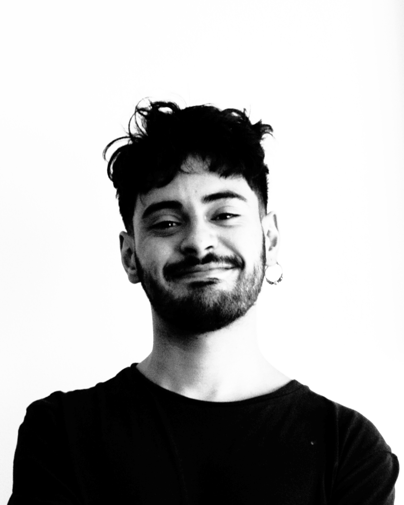

Curriculum Vita

Raúl Martínez Friz
Resumen
Artista Visual con experiencia en la elaboración de sistemas complejos en la producción artística, lenguaje de los nuevos medios, fotografía e instalación.
Educación
- Universidad Finis Terrae año 2020
- Taller libro fotoquímico con Catalina de la Cruz año 2022
Experiencia profesional
- Exposición colectiva en Universidad Finis Terrae, encuentro y desencuentro 2019
- Exposición colectiva xamen de grado UFT 2020
- Exposición colectiva crescendo de monocromía y policromiía 2021
- Proyecto editorial salvo conducto, en transito 2021
- Lanzamiento taller librofotoquímico
- Exposición colectiva de fotografía, en transito 2022
Experiencia laborales
- Tutor taller de artes por el día de la cultura, Escuela de la industria gráfica 2019
- Profesor particular de interpretación fotográfica 2020
- vendedor/visual tienda Reciclageilove 2021-2022
- Ayudante UFT ramo Proyecto de pinturas 2020-2021 del profesor Raimudno Edwards
- Ayudante UFT ramo cinemática de la profesora Claudia Muller
Habilidades
- Pintura
- Fotografía
- Escultura
- talación
- Grabado
Fortalezas
- Empatía
- Habilidades blandas
- Entusiasta
- Perseverancia
- Paciencia
Fuente
Raúl Martínez